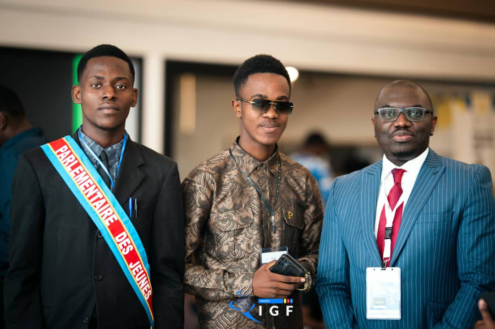
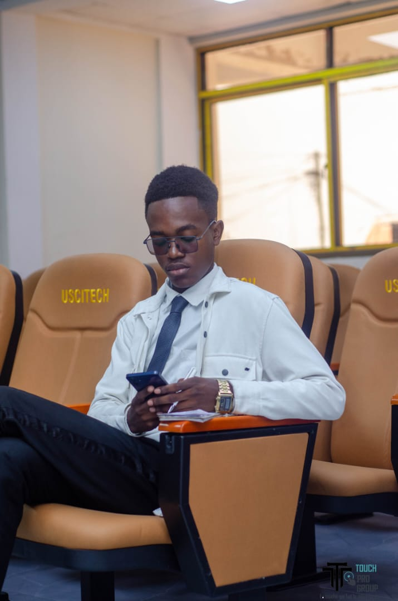
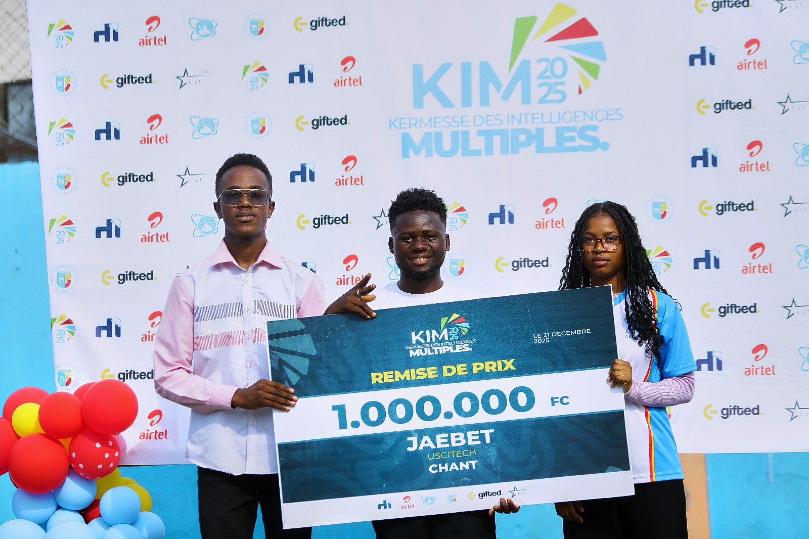
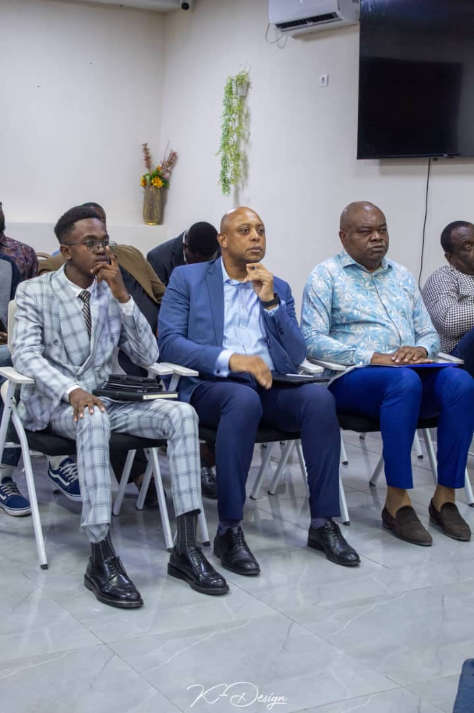
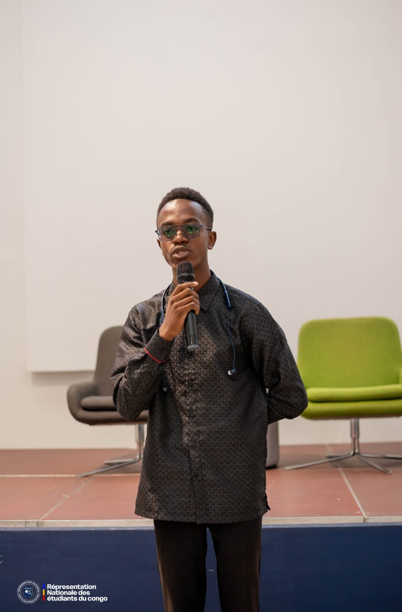
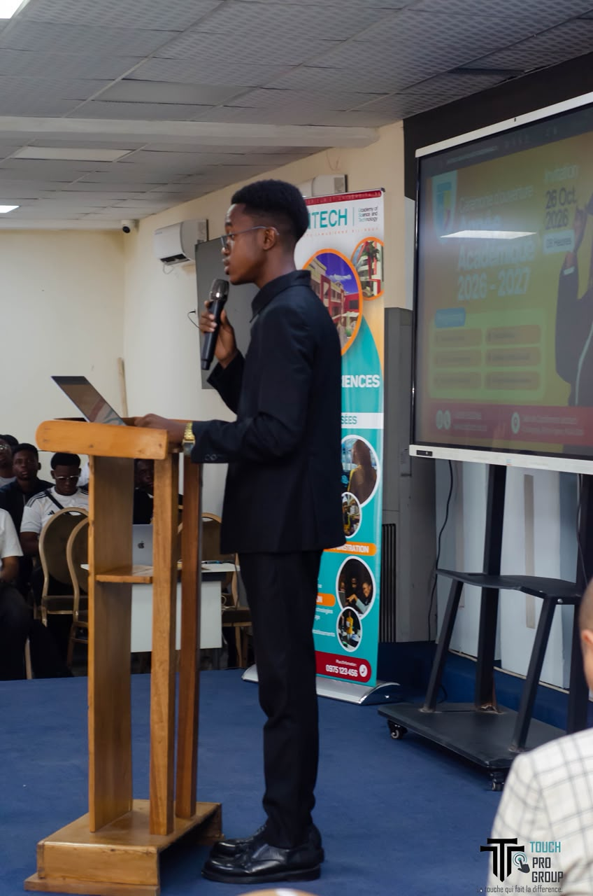
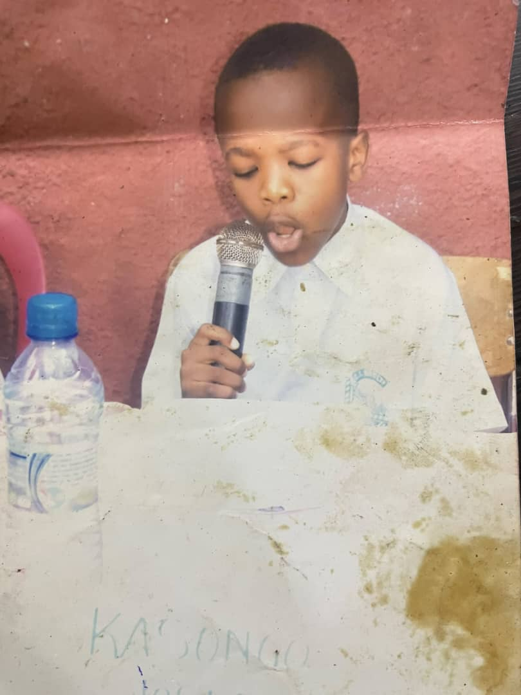
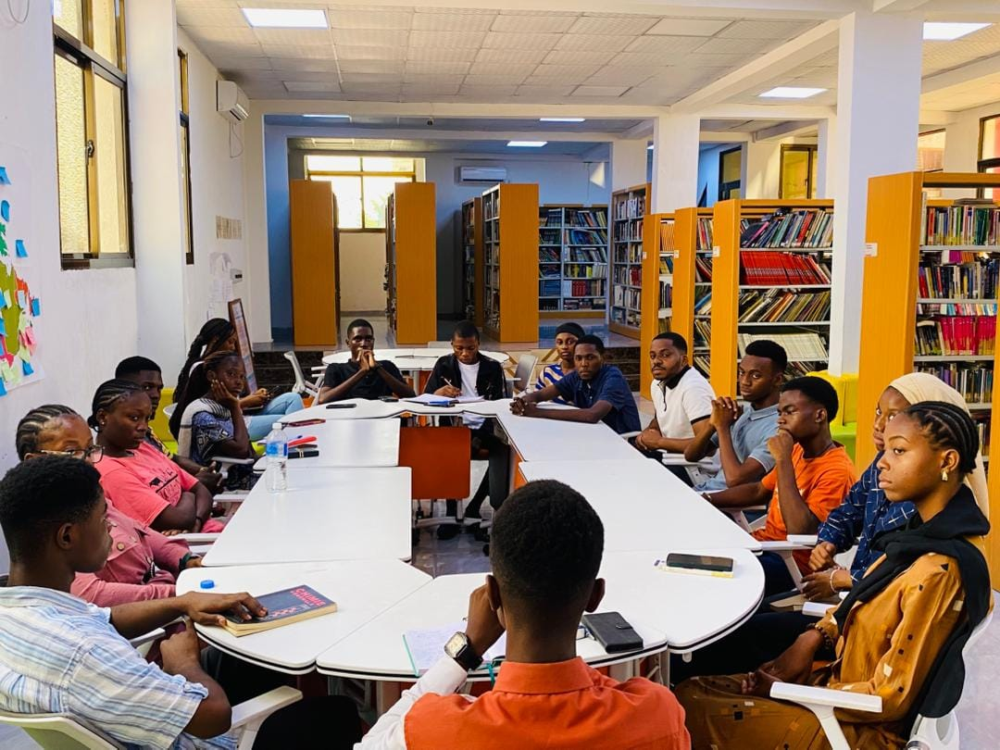

Mes photos
►

◀

►

◀


Découvrez les moments marquants et les engagements du président.
Je suis Joseph Onasambi Longonya, Président des étudiants de l'Université des Sciences et Technologies (USCITECH) à Kinshasa. Né le 17 juin 2007, je suis un jeune leader passionné par l'innovation, la technologie et l'entrepreneuriat, mettant mon engagement au service de la jeunesse congolaise.
Je tire mes valeurs de partage, de discipline et de responsabilité de mes racines familiales. Fils de Victor Longonya Dikuna et de Bethy Longonya Dembo, j'ai grandi au sein d'une fratrie soudée de 6 enfants dont je suis le 4e :
Mon parcours éducatif reflète mon goût pour l'excellence et la rigueur :
Responsabilités :
Compétences Clés : Maîtrise des outils numériques et technologiques, bilinguisme (français / anglais), gestion économique et stratégie de management d'équipe.







